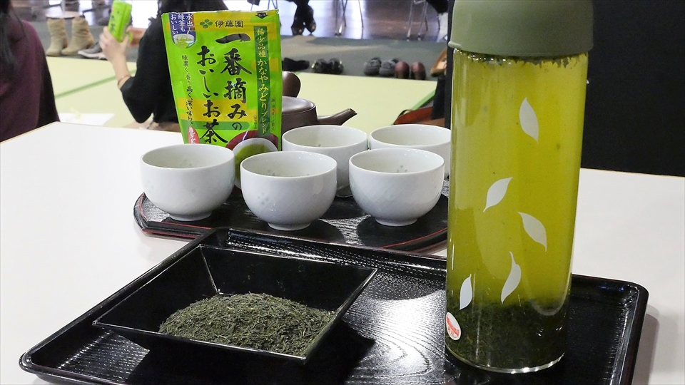
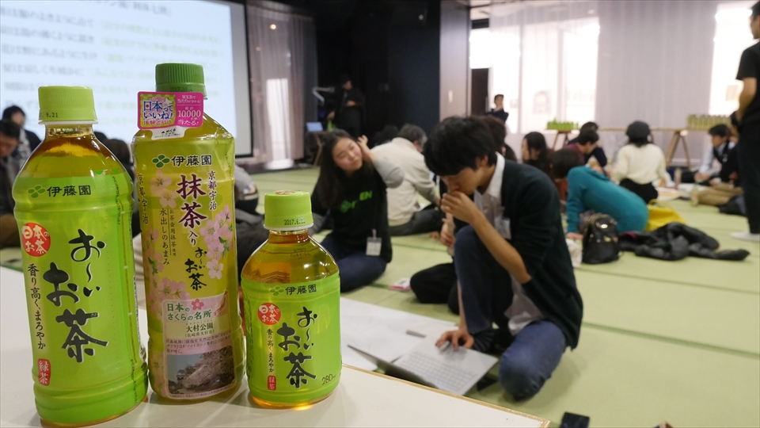

茶ッカソン流「利休七則」と「一期一会」の精神
世にある多くのハッカソンやアイデアソンでは、アイデアやサービスの実現や事業化を目的とすることが一般的です。もちろん茶ッカソンにもこのような側面はあるものの「出されたアイデアの優劣に意味はない」と開始時に説明がなされます。
なぜなら私たちは、参加したすべての方に芽生えた「気づき」こそが茶ッカソン最大のアウトプットだと考えているからです。
茶ッカソンの「一期一会」
茶道において「この茶会は未来永劫二度と繰り返されることはない一生に一度の機会であり、亭主・客ともにその場で誠意を尽くす」という精神が重要とされます。
この心構えを「一期一会」（いちごいちえ）といいます。
短い期間で主催者・参加者・ゲストが一つのテーマに沿ってアイデアを出し合う茶ッカソンはまさに現代の「茶会」。生涯でたった一度の機会を一期一会の精神でみなさんに体験していただくことを大切にしています。
茶ッカソン流「利休七則」

織田信長や豊臣秀吉の時代に茶道を極めた千利休。彼は茶道におけるおもてなしの精神として7つの心得を記しました。それが「利休七則」です。
現代の茶会と定義される茶ッカソンにも、もちろんこのおもてなしの心が受け継がれおり、内容をアイデアソンの文脈にあてはめ「茶ッカソン流『利休七則』」として定義しています。
今回はこちらの内容をご紹介いたします。
一、茶は服のよきように点て（自分の理想以上に相手の気持ちを考え）
「服」とは「飲む」ことを指します。客人を迎えた主人は、客人の気持ちに立ってお茶をたてなさい、という教えです。
これを茶ッカソンでは「自分の理想以上に、相手の気持ちを考えなさい」という言葉に置き換えました。
アイデアには必ず対象となる相手がいます。自分のエゴを捨て、対象となる相手が何を思い何を欲しているのかを第一に考えたアイデアにこそ価値があるという教えです。
二、炭は湯の沸くように置き（結果だけでなく準備・段取りにも気を遣い）
お茶を点てる際に炭に火をつけお湯を沸かすのですが、その準備や段取りをおろそかにするとうまくお湯が沸かず、お茶どころではなくなってしまいます。
茶ッカソンでは結果としてアイデアのプレゼンテーションを行いますが、そこに至るまでの準備・段取りにきっちり気を遣ってこそ、最良の結果につながるという教えです。
三、花は野にあるように生け（課題・アイデアの本質を常に意識して）
茶室に花を飾る際は、花が野にある際の本質的な美しさを引き出すために「自然にあるように生ける」というのが基本なのだそうです。
茶ッカソンにおいては「課題・アイデアの本質を常に意識することが重要」だと解釈しています。課題に対して解決策を考える前にまずその課題の本質が何かを考えること、さらに出たアイデアについても本質を見極め余計な要素を排除することで、その真価がはっきりと際立つのです。
四、夏は涼しく冬暖かに（みんなでよい雰囲気をつくるために気配りし）
茶室において夏に涼しく冬に温かく感じる工夫をし、参加者が快適に過ごせるよう気配りをすることが大切です。この気配りは空調だけにとどまらず、目に入る調度品の色や聞こえてくる音にも及んだといいます。
茶ッカソンでは「いい場を創るために、みんなでお互いに気配りをしよう」と解釈しています。主催の私たちが意識するのはもちろん、その場にいるすべての人たちがお互いに気配りをすることで、良いアイデアが生まれる良い雰囲気が生み出されるのです。
五、刻限は早めに（時間に余裕をもって行動、どんな時も焦りは禁物）
読んで字のごとく時間を意識して早めに行動しましょうという意味ですが、大切なのはその行動で生まれる心の余裕こそがおもてなしの心を生むという教えです。
限られた時間で実施されるグループワークにおいて、時間を意識することは言うまでもなく大事なことですが、それ以上に大事なのは「余裕を持つ」こと、「焦らない」ことです。
終了の時間が近づくにつれて誰もが焦ってしまうものですが、そんな時こそ深呼吸をしたり、議論を止めたりしながら心のゆとりを取り戻しましょう。
六、降らずとも傘の用意（不慮の事態に備え、チームで助け合い）
雨が降っていなくても傘を用意せよ、ということは不測の事態に備えなさいということを指しています。
茶ッカソンにおいて大切なのは、不慮の事態が起こってしまった際にチームでフォローしあうということです。トラブルはいつ何時起こるか予想ができません、しかしそんな瞬間にこそ、誰かを責めるのではなく力を合わせてリカバリーすることで、チームの力が試され、よいアウトプットにつながるのです。
七、相客に心せよ（この場にいるすべての参加者に真心を）
相客とは同席した他の客人のこと、心するとは気を配るということです。茶ッカソンでは「この場にいるすべての参加者に真心を」と解釈しています。
茶ッカソンはグループワークが基本ですが、最初にご説明した通りアイデアの優劣をつけることではなく、すべての人間で一期一会のすばらしい場をつくり、それぞれが心に気づきを得ることを目的としています。
この時大切になるのが、利己的になることではなく「利他の精神」をベースに動くことです。2度とないこの場をかけがえのないものにするためには、参加者のみなさまの真心が必要なのです。
茶ッカソンで得たものが、その後の人生を豊かにする
ここまでご説明してきた「茶ッカソン流『利休七則』」は何も茶ッカソンの場でのみ有効なものではありません。むしろ普段チームで仕事をする上でも大切な、とても普遍的なことを語っていることに気づかされます。
現代のように異なるバックグラウンドを持った人間が集まって新しい価値を生み出すことが必要とされる時代にこそ、この「茶ッカソン流『利休七則』」が有効であると私たちは考えています。
茶道の精神をベースに持った、日本のアイデアソン「茶ッカソン」
是非ご参加いただき、この精神に触れてみてください。